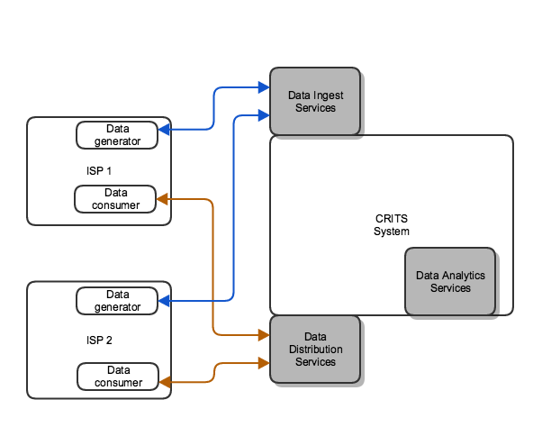

CRITS Background.
CRITS (Collaborative Research Into Threats) is an open source project that provides a unified tool for analytics and collaborative engagement in threat defense. The CRITS platform is implemented in the form of the core CRITS system that provides various TLO's (Top Level Objects) and a web interface to administer and manage users, sources and visibility into the data. CRTIS also provides a system of addon services to extend CRITS. A CRITS service is a plugin that among other things can:
- extend CRITS functionality
- allow CRITS to interact/communicate with external entities
- perform analytics, data-mining and reports generation
Extending CRITS for DDoS Information Sharing

The diagram above shows the proposed architecture for a CRITS based trusted DDoS Information Sharing system. It adds three modules to the CRITS system:
Data Ingest Services
The DIS component is a set of CRITS services that allows each authorized ISP connecting to the trusted system to incrementally upload new DDoS data to the system. The DIS component authenticates the connection from an ISP (using X.509 Certificates), establishes a secure tunnel, verifies the source of the data, parses and validates the data, associates the data with the origin source and stores it for the DAS component to process it. Given that multiple ISP's are expected to connect to this system, it is likely that the data exported/uploaded by various ISP's will be in different formats. the DIS component is expected to normalize the ingested data. Currently only JSON/JSON-Schema based data formats are supported.
Data Analytics Services
The DAS component is a set of CRITS services that analyses/processes the data and data streams and report streams that are then shared with the ISP's based on the access restrictions and privacy constraints. At the very least, the DAS currently processes the data provided by the DIS and updates existing measurement points, segregates the data based on the origin of the data and the owner of the AS associated with the threat information. It assigns access control to the data stream so that only the origin of the data and the AS associated with the threat information can see/access the information. However it is possible to add new analytics services within the DAS module like:
- Type of attack
- AS Mapping/Verification
- Update attack counts
- Source verification - direct vs reflective
- Verify serice - DNS, NTP, SSDP, SNMP etc ### Data Distribution Service The DDS component is a set of CRITS services that hosts the analyzed and shared data amongst ISP's based on the access restrictions and ownership of the data. It will host a set of web-services to which various ISP's can securely connect, and after authentication (using X.509 Certificates), be able to download threat information relevant to their AS.